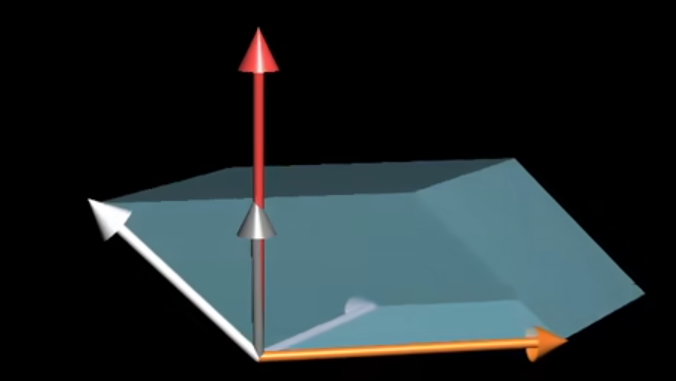

线性代数¶
在这里也说一句题外话，对于一个矩阵而言，我们最好用列向量组来帮助我们理解。
矩阵的纵向扩展增加是增加维度，向右扩展也就是横向扩展实际只是增加此列向量组中的向量数量。
由此我们也可以理解为什么我们不能计算3×4的行列式了，或者简单点说，我们为什么不能计算2×3的行列式。
因为一个平面需要一组最大无关组也就是2个向量，而这里有竟然有3个，那会起冲突(第三个向量，极大可能不在我们所定义的的前两个平面中，即并不能构成一个合理的几何模型)。定维少向量同样导致无法计算的问题。
向量¶
方向加数值，也可以看作一组有序数列 $$ 三维向量：\left[\begin {array}{c}1\newline2\newline-5\end{array}\right]=(1,2,-5) $$ 一组向量求加减 $$ \left[\begin {array}{c} x_1\newline y_1\newline z_1\newline \end{array}\right]+ \left[\begin {array}{c} x_2\newline y_2\newline z_2\newline \end{array}\right]= \left[\begin {array}{c} x_1+x_2\newline y_1+y_2\newline z_1+z_2\newline \end{array}\right] $$
线性组合¶
即Linear Combination
指的是两组向量分别进行各自的缩放后，共同组合成一组新向量。
怎么样理解其中的线性呢？
因为当我们固定一个向量，另一个向量无论怎样缩放，其最终向量指向的点的坐标必然在同一条直线上。 $$ \vec c=a\vec v +b\vec w= a\left[\begin {array}{c} x_1\newline y_1\newline \end{array}\right]+ b\left[\begin {array}{c} x_2\newline y_2\newline \end{array}\right] $$ 当然，你要是二者都不固定，随意的缩放组合会张出一个平面，对于一组三维向量，则会张出一个空间。（前提是他们都是最大无关组）
线性相关¶
在此之上，易于理解的
线性相关：可以通过两个向量进行线性组合而得到的新向量。则称这个新向量与原先的两个向量线性相关 $$ \vec u与 \vec v、\vec w线性相关\\vec u = a\vec v+b\vec w $$
基¶
只要二者是一组线性无关组，那他们就可以表示出二者所在平面的原点到任意一点的向量。
我们则可以称由这两个向量线性组合构成的全部向量的集合为“张成的空间”（张量，tensor）
向量空间的一组基是张成该空间的一个线性无关向量集。即张成该空间的一个线性无关的集合
矩阵乘法¶
线性变换¶
满足以下两种性质的变换可以看作线性变换
- 直线仍旧是直线
- 原点的位置不变
用数值表达线性变换，可以看作是对于基向量进行旋转缩放。
严格线性限制 $$ L(\vec v + \vec w) = L(\vec v)+L(\vec w)\ L(c\vec v)=cL(\vec v) $$
矩阵和向量的乘法¶
我们知道向量可以看作一个有序数列，我们可以将矩阵看作多个向量组成的一个向量组。
譬如 $$ \left[\begin {array}{c} 1 &-2 \newline 4 &3\newline \end{array}\right]= \left[\begin{array}{c} 1\newline 4\newline \end{array}\right] \left[\begin{array}{c} -2\newline 3\newline \end{array}\right] $$ 我们可以将这个2*2的矩阵，看作两个二维向量，即(1,-2)和(4,3)。
而在矩阵和向量的乘法中：
以上述矩阵为例，其与一个向量相乘 $$ \left[\begin {array}{c} 1 &-2 \newline 4 &3\newline \end{array}\right] \left[\begin {array}{c} 1 \newline 2 \newline \end{array}\right]= 1\left[\begin {array}{c} 1 \newline 4 \newline \end{array}\right]+ 2\left[\begin {array}{c} -2 \newline 3\newline \end{array}\right]= \left[\begin {array}{c} -3 \newline 10 \newline \end{array}\right] $$ 可以看作对于向量（及其所在平面的）的旋转伸缩。
具体来说：
在原先的向量中，向量与x轴、y轴上的单位向量（也就是x y坐标系中的一组基向量）具有如下的关系 $$ \left[\begin {array}{c} 1 \newline 2 \newline \end{array}\right]= 1\left[\begin {array}{c} 1 \newline 0 \newline \end{array}\right]+ 2\left[\begin {array}{c} 0\newline 1\newline \end{array}\right] $$ 显而易见的，向量本身就是对基向量的旋转缩放，或者说线性组合后产生的结果。
而与向量相乘的矩阵作为转换矩阵改变了原先的基向量(对基向量本身进行了旋转缩放，也就是进行了线性变换)。对于基向量进行了线性变换，即对整个平面进行了缩放变换。
或者更易于理解地说，其通过重新定义了单位向量（基）原先的值，进而对整个坐标系进行了线性变换实现了对原先向量的改变。
矩阵与矩阵的乘法¶
在上一节中我们提及，矩阵对于向量，是对于其基向量的旋转缩放，进而对于整个平面和向量的旋转缩放。我们可以称这个矩阵为转换矩阵
而矩阵与矩阵的乘法，则可以看作对平面坐标系的多次旋转缩放。但是我们知道 $$ AB \neq BA $$ 所以变换的顺序是影响变换的最终结果的，当然带上括号并不影响结果。因为本质上来说，都是前者对于后者的旋转变换。
整个式子需要从右至左去读。
旋转¶
剪切¶
旋转矩阵和剪切矩阵共同组成的复合矩阵，满足了一切需要的变换。
逆变换¶
我们这个时候也好理解逆矩阵究竟在做什么工作了
本质上逆矩阵的矩阵变换应当是对于矩阵变换的逆操作。举个例子，对于旋转再剪切的一个空间我们对它进行逆剪切和逆旋转恢复到原来的平面中。
为什么行列式为0阵不具备逆矩阵？
同时一个行列式为0的矩阵同样不具备逆矩阵，从计算上理解，我们认为除数不可以为0，因此不能计算出此矩阵的逆，因而其不具有逆矩阵。
从几何上理解我们认为一个矩阵空间，在出现行列值为0的情况时（后续我们会讲解行列式的含义，在这里我们可以认为行列式值为0的方阵，对整个坐标系做了一个降维操作），其在22的空间被视作压缩（矩阵变换）成一条直线，而直线的解压缩的结果具有多解（无穷解空间）因而其不具备一个准确的逆矩阵*。
行列式¶
对于行列式，我们可以看作，矩阵空间(22的空间为例)在计算由这个平蛮至少两个向量组成的平行四边形的面积*。
对于33的立体空间，则是计算一个六面体的体积*
顺带说一句，转置不影响行列式的值。
但是如何理解其中的负值呢？
对于标准基，我们同样以x y坐标系中的i j为例，当i 始终保持在j的右下侧相对位置，即j的x小于i，y大于i。若不满足任意一条即为负值。
或者可自行想象平面的翻转。
其实也是好理解的，当 i j垂直时为面积的最大值（仅仅考虑角度）而当二者重合即为0。这恰好是一个sin的图像。而二者之间的角度与面积之间的关系也正符合一个sin函数的关系，所以当角度超过了Π或者是小于0（定义原先的角度为Π/2）
这个时候我们也能理解为什么行列式交换行列会异号了，明显的，交换了某两个基的值相当于对于整个空间进行了一次翻转。
不满秩的情况¶
我们单独讨论一下不满秩的情况，前面我们说行列式的计算实际就是在计算张成空间的图形面积/体积。但这是对于一个满秩的矩阵来说的，对于一个非满秩的矩阵，我们知道其行列式值为0.
为什么非满秩阵的行列式为0呢？
同样好理解的，相当于在一个平面空间这个矩阵所表示的空间实际仅为一条线，在一个立体空间表示为一个平面。而在相应的空间中我们需要对应的维度的几何模型来表达行列式的值，所以对于一个立体空间一个平面的面积尽管无限大，体积那也是0；直线无限长对于一个平面而言其面积仍为0。
关于秩¶
秩我们可以看作这个矩阵的准确维度，也就是这个矩阵(列向量组)能张成空间的维度。
线性方程组¶
线性方程组 $$ 线性方程组：\ \left[\begin {array}{c} A &B\newline C &D\newline \end{array}\right] \left[\begin {array}{c} x\newline y\newline \end{array}\right]= \left[\begin {array}{c} a\newline b\newline \end{array}\right] $$ 对于代数上的理解可以理解为 $$ Ax+By =a\ Cx+Dy =b $$ 而在几何上去理解，可以看作某个向量，在经过矩阵变换后得到了结果向量，求这个原始向量。之前提及的逆变换在这里起到了相应的作用，对于结果向量进行逆变换我们就可以得到我们所求的向量。
tips：前面我们提及了行列式为0的矩阵其不具备逆矩阵，但这并不意味着其线性方程组并不存在解。若其结果向量，在这个降维空间内，那我们仍认为这个方程组有解。其实就是结果向量本身也可以进行降维。
一般行列式为0的线性方程组，其解空间要么多解，要么无解。
若结果向量均为0，一般我们讨论非零解
点积与叉积¶
点积¶
首先我们要确定以下点积的计算形式为 $$ \left[\begin {array}{c} a\newline b\newline c\newline \end{array}\right]\cdot \left[\begin{array}{c} d\newline e\newline f\newline \end{array}\right]= ad+be+cf $$ 即对应位置的数值相乘再整体求和。很显然，在高中的时候我们学过其几何概念，即一个向量在另一个向量方向的投影，将投影的模和此方向向量的模相乘。所以我们有一个更好的计算形式为 $$ \vec a \cdot \vec b=|\vec a||\vec b|\cos(\theta) $$ 那问题是，我们如何理解这两类计算方式是计算同一种结果的方法呢？
这是易于可见的 $$ \left[\begin{array}{c} a &b &c \end{array}\right] \left[\begin{array}{c} d\newline e\newline f\newline \end{array}\right]=ad+be+cf $$ 也就是我们可以认为，点积的作用是将前一个向量由一个向量变为了1×3的矩阵对空间进行了线性变换，将我们原先的三维空间矩阵线性变换为一维（数轴）。其结果为，基向量在对应的转换后所表示，向量在数轴上的长度。或者更为直观的说，整个平面进行了线性转换，整体被压缩在一个向量同方向的直线上（如果这个向量是单位向量我们仅考虑方向，也就是单纯的投影，如果其非单位向量，则需要额外考虑这个向量对另一个向量在数轴上的缩放效果），而我们的计算结果无非是在计算在整个空间被压缩后，另外一个向量在这个向量的数轴上的长度。
注意我这里所说的是压缩而不是投影，这个向量在数轴上的长度是其n维基向量在进行转换定义后，决定了各自在这条数轴上的长度后，压缩后的值与原先向量的值相乘再求和而得到的。或者说，是整个空间进行了压缩，而这个原先向量在这个压缩后数轴上的长度。
这体现了向量与矩阵之间的对偶性，n维向量都可以认为是n维空间向1维空间的线性变换，而这个n维向量我们可以叫做其对偶向量
叉积¶
首先我们需要明确一件事，叉积是三维空间中的概念，也就是说除了三维空间，我们无法在二维上求解出两个向量的之间的叉积。
先给一个正确的三维空间中的叉积计算方法 $$ \vec a\times \vec b=\left[\begin{array}{c} i &j &k\newline a &b &c\newline d &e &f\newline \end{array}\right]= \vec c $$ 难以言说的，再给一个十分不严谨的在二维平面中的计算叉积的计算方法： $$ \left[\begin{array}{c} a\newline b\newline \end{array}\right]\times \left[\begin{array}{c} c\newline d\newline \end{array}\right]= \det(\left[\begin{array}{c} a &b\newline c &d\newline \end{array}\right])\ $$ 我们可以给予这个算法一个证明： $$ \left[\begin{array}{c} i &j &k\newline a &b &0\newline c &d &0\newline \end{array}\right]=k(ad-cb)= k\cdot\det(\left[\begin{array}{c} a &b\newline c &d\newline \end{array}\right])= \det(\left[\begin{array}{c} a &b\newline c &d\newline \end{array}\right])\ $$ 也就是说，从数值上来看或者说二维上去看，叉积实际上做的：将两个向量合并为行列式再计算行列式的值，即其在计算两个向量所组成的平行四边形的面积。可以通过转置帮助自己理解一下。
但是实际上，我们知道根据叉积的真正几何定义，实际上它是计算与这两个向量正交的向量。
其中此向量的正交方向遵循右手定则。单纯遵循右手定则似乎是一个很不负责任的讲解，所以我们增添说明
若式子为形如 \(\vec a \times \vec b\) 的多项式，则我们从 \(\vec a\) 到 \(\vec b\) 为旋转方向判断 \(\vec c\) 的正负值 \如果 \(\vec a\) 到 \(\vec b\) 为左旋方向，则 \(\vec c\) 为正；反之则 \(\vec c\) 为负值。
数值也就是此向量的模长是两个向量组合后的行列式的值（平行四边形的面积）。
而向量的具体值，无非就是再给一个基向量，用计算行列式的方法计算各个坐标的值从而得到所求向量。
补充： $$ \vec c \cdot \left[\begin{array}{c} x \newline y \newline z \newline \end{array}\right] = \det(\left[\begin{array}{c} x &a &b\newline y &c &d\newline z &e &f\newline \end{array}\right])\ $$ 结合之前所学的点积内容，单位向量在c向量上的线性变换。而右侧计算出了两个向量与此单位向量的六面体体积。
这也就是为什么，我们所求的向量c的值就是底面积了。
底面 × 斜边在底面法向量的投影 = 体积 = 行列式的值 = [x y z] · c

基变换¶
欸，其实就是之前说的线性变换对一组基向量重新定义，改变了整个坐标系。用不同的向量基，即使系数相同，所表示出来的同个向量在不同的基向量空间中的描述完全不同。
相当于更换了描述空间的语言。
具体方法是，将基转为我们的描述方式，比如在某个空间中 i 是[1,2] j是[-2,1]，然后它用它的语言（基向量描述了一个向量），我们需要先将此向量由这个语言变为我们通常认为的那种（用我们的语言描述），再进行矩阵的变换也就是线性变换，再通过逆矩阵（我们翻译的逆矩阵，也就是从我们的语言描述的变换翻译成它所描述的）变成原先的语言（实际也不原先了，但是要给他变回去）。 $$ A^{-1}MA $$
特征值与特征向量¶
在这个部分我们并不会引导进行理解特征值和特征向量，当然我们前面也貌似没有进行引导。我们直接确定特征值和特征向量的几何模型。
特征向量意味着矩阵A，作为一个变换矩阵，其处理的坐标系中不曾改变方向的向量。即这个向量在线性变换中仅仅发生了缩放。
而特征值恰是这个缩放的大小。 $$ A\vec v=\lambda \vec v\ A\vec v = (\lambda E) \vec v\ (A-\lambda E)\vec v = \vec 0 $$ 可以感受一下一整个式子，式子①②所表达的皆是一个向量经过矩阵A的转换后其仍在原来的直线上，只是进行了 λ 的缩放。而我们经过推导，得到的式子则表明我们所求的向量与(A-λE)存在一个积为0的关系，考虑到这是一个向量与矩阵的乘法，我们认为它相当于是一个转换矩阵对向量 v 进行了转换后，得到了一个零向量。
因为我们想要求得特征向量应当是一个非零向量，所以我们仅考虑括号内的内容为0。
而我们又知道，当且仅当矩阵代表的变换将空间压缩到更低的维度时，才会存在一个非零向量使得矩阵和它的乘积为0
对应的矩阵行列式为0，可知道的也就是我们在行列式专题中所提及的。总结一句话就是，det(A-λE)=0才可以降维，相当于体变成了面，面变成了线。具体可以看点积部分的内容。计算出如何把这个A经过 λ 的变换处理之后得到一个合理的变换阵，使得存在特征向量被这个变换阵转换（压缩）后在数轴上的长度等于0。（不要认为行列式值等于0，任意的向量与其相乘都可以得到0，这是混淆了变换与值的计算）。